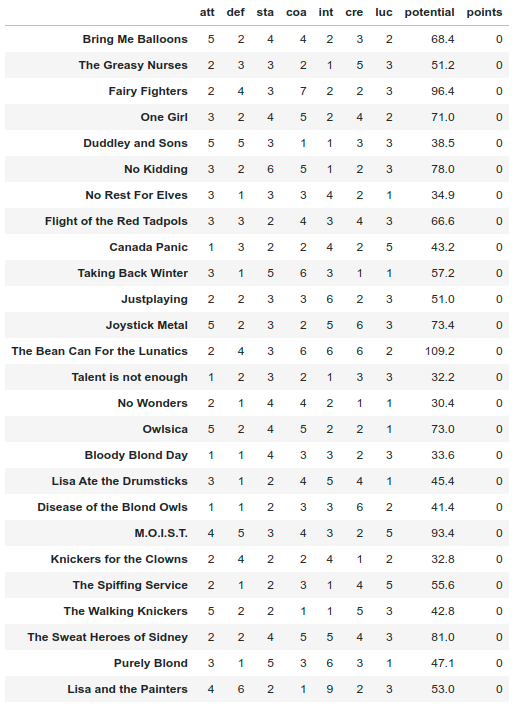

Ranking dataset - Teams
Contents
Ranking dataset - Teams¶
Here we will see how to build a dataset that can be used to train ranking models.
Context¶
There is a championship with 26 teams. The matches happen between two teams: the winner takes 1 point and the loser takes no points, there is no draw.
Each team has a set of characteristics:
att- attack;def- defense;sta- stamina;,coa- coach;int- intelligence;cre- creativity;luc- luck.
These are the features of our dataset and how important they are to win a match depends on competition itself. So let us use a deterministic equations to combine each feature in one number called potential. This potential will be used in a simulation to determine which team wins a match.
To build the initial dataset we will also simulate the features with a poisson distribution before computing the potential.
Note
About the teams names: I got them at a website of random generation stuff. If they are offensive in any kind of way, please tell me.
import numpy as np
import pandas as pd
np.random.seed(42)
names = ["Bring Me Balloons",
"The Greasy Nurses",
"Fairy Fighters",
"One Girl",
"Duddley and Sons",
"No Kidding",
"No Rest For Elves",
"Flight of the Red Tadpols",
"Canada Panic",
"Taking Back Winter",
"Justplaying",
"Joystick Metal",
"The Bean Can For the Lunatics",
"Talent is not enough",
"No Wonders",
"Owlsica",
"Bloody Blond Day",
"Lisa Ate the Drumsticks",
"Disease of the Blond Owls",
"M.O.I.S.T.",
"Knickers for the Clowns",
"The Spiffing Service",
"The Walking Knickers",
"The Sweat Heroes of Sidney",
"Purely Blond",
"Lisa and the Painters"]
features = ["att","def","sta","coa","int","cre","luc"]
team_df = pd.DataFrame(data=np.random.poisson(2.0,size=(len(names),len(features)))+1,columns=features,index=names)
team_df["potential"] = team_df.apply(lambda x: (4*x["att"] + 2*x["sta"]*x["def"])*0.35*x["coa"] + 3*x["int"] + 2*x["cre"]*x["luc"] ,axis=1)
team_df["points"] = 0
It will look like:
{kind=link}
The simulation will consider a season such that each team plays against every other team, so will have every pair of teams. Here there is no role of home team and visitor.
Let team \(i\) features be represented as \(x_{i}\), its potential as \(s_{i}\) and its points as \(p_{i}\). The simulation algorithm is the following:
Algorithm 1 (Ranknet algorithm)
Repeat each pair of teams (\(team_{i},team_{j}\)):
- Compute likelihood of \(team_{i}\) wins over \(team_{j}\):
- \(prob = \sigma(s_{i},s_{j})\)
- sample \(z\): a random number between 0 and 1
- If \(z < prob\):
- \(p_{i} = p_{i} + 1\)
- Else:
- \(p_{j} = p_{j} + 1\)
In python we can do that like:
from itertools import combinations
def sigmoid(si,sj,a=0.05):
def _sigmoid(delta_s,a):
return 1/(1+np.exp(-a*(delta_s)))
return _sigmoid(si-sj,a)
def get_item_features(idx,df):
return df.loc[idx][features].values.tolist()
def get_items_features(pairs,df):
matrix = [get_item_features(pairs[0],df)+get_item_features(pairs[1],df)]
return np.array(matrix)
def simulate_season(team_df):
result_names = []
X = np.empty(shape=(1,int(2*len(features))))
games = list(combinations(team_df.index.tolist(),2))
np.random.shuffle(games)
for team_i,team_j in games:
prob = sigmoid(team_df.loc[team_i]["potential"],team_df.loc[team_j]["potential"])
if np.random.rand() < prob:
result_names.append((team_i,team_j))
X_aux = get_items_features((team_i,team_j),team_df)
team_df.loc[team_i, "points"]+=1
else:
result_names.append((team_j,team_i))
X_aux = get_items_features((team_j,team_i),team_df)
team_df.loc[team_j, "points"]+=1
X = np.concatenate((X,X_aux),axis=0)
np.save("data/ranking-teams.npy",X[1:])
return team_df
team_df = simulate_season(team_df)
team_df.to_csv("data/ranking-teams-simulated.csv",index=False)
We have now two datasets:
ranking-teams.npyis the dataset that can be used to train a Ranknet, for example. It contains the features of both teams that played in a match. Here we have 7 features, so the first 7 columns are the features of winning teams and last 7 of the losers. This is a simple way to build a dataset to train ranking models, but not the only one.ranking-teams-simulated.csvis the dataset which summary the teams’ features, potentials and points score in the simulation. Let us check it and compute some stuff.
Sorting by points:
{kind=link}
The Spearman correlation between potential and points is \(0.94\), which is very high. Remember that in real life the potential is an unknown quantity, so we look for methods to quantity something (points in our case) that could have high correlation with it. It looks like this method of playing matches and assign points can be used to address which team is best.
Let us check the likelihood and risk:
def loss_func_(si,sj,a=0.05):
def _loss_func(delta_s,a):
return np.log(1+np.exp(-a*delta_s))
return _loss_func(si-sj,a)
def prob_i_wins_over_j(team_i,team_j):
p = sigmoid(team_df.loc[team_i]['potential'],team_df.loc[team_j]['potential'])
print(f"Likelihood of {team_i} wins over {team_j}: {p:.1%}")
def error_of_bet(team_i,team_j):
error1 = loss_func_(team_df.loc[team_i]['potential'],team_df.loc[team_j]['potential'])
error2 = loss_func_(team_df.loc[team_j]['potential'],team_df.loc[team_i]['potential'])
print(f"Risk of placing a bet on {team_i}: {error1:.2f}")
print(f"Risk of placing a bet on {team_j}: {error2:.2f}")
prob_i_wins_over_j("The Greasy Nurses","No Wonders")
error_of_bet("The Greasy Nurses","No Wonders")
>>> Likelihood of The Greasy Nurses wins over No Wonders: 73.9%
>>> Risk of placing a bet on The Greasy Nurses: 0.30
>>> Risk of placing a bet on No Wonders: 1.34
For the last check, let us see how features and points can be good rankers if compared with potential:
def dcg(r,i):
return (2**r - 1)/(np.log2(1+i))
def dcg_k(x,k):
result = 0
for i in range(1,k+1):
result += dcg(x[i-1],i)
return result
def max_dcg_k(x,k):
x = sorted(x)[::-1]
return dcg_k(x,k)
def ndcg_k(x,k):
return dcg_k(x,k)/max_dcg_k(x,k)
ndcg_list = []
for col in ["points"]+features:
ndcg_list.append([col]+[ndcg_k(team_df.sort_values(by=col,ascending=False)["potential"].values,k) for k in [3,10,20,26]])
ndcg_df = pd.DataFrame(ndcg_list,columns=["feat"]+[f"ndcg_{k}" for k in [3,10,20,26]])
{kind=link}